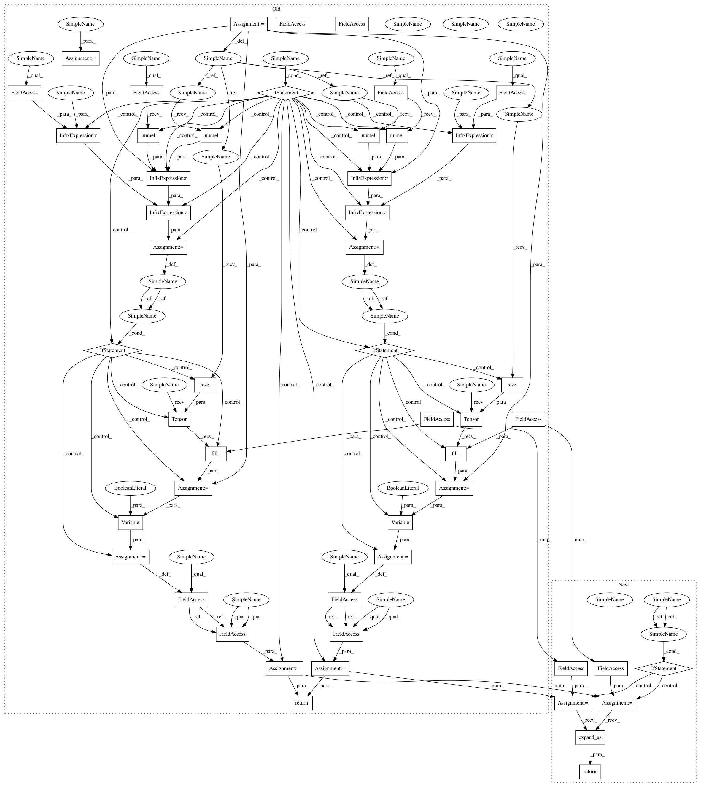

8f6a6f153781d0908fb0904349aae844494026ea,models/networks.py,GANLoss,get_target_tensor,#GANLoss#Any#Any#,164
Before Change
raise ValueError("GAN type [%s] not recognized." % gan_type)
def get_target_tensor(self, input, target_is_real):
target_tensor = None
if target_is_real:
create_label = ((self.real_label_var is None) or
(self.real_label_var.numel() != input.numel()))
if create_label:
real_tensor = self.Tensor(input.size()).fill_(self.real_label)
self.real_label_var = Variable(real_tensor, requires_grad=False)
target_tensor = self.real_label_var
else:
create_label = ((self.fake_label_var is None) or
(self.fake_label_var.numel() != input.numel()))
if create_label:
fake_tensor = self.Tensor(input.size()).fill_(self.fake_label)
self.fake_label_var = Variable(fake_tensor, requires_grad=False)
target_tensor = self.fake_label_var
return target_tensor
def __call__(self, input, target_is_real):
target_tensor = self.get_target_tensor(input, target_is_real)
return self.loss(input, target_tensor)
After Change
raise ValueError("GAN type [%s] not recognized." % gan_type)
def get_target_tensor(self, input, target_is_real):
if target_is_real:
target_tensor = self.real_label
else:
target_tensor = self.fake_label
return target_tensor.expand_as(input)
def __call__(self, input, target_is_real):
target_tensor = self.get_target_tensor(input, target_is_real)
return self.loss(input, target_tensor)
In pattern: SUPERPATTERN
Frequency: 4
Non-data size: 51
Instances
Project Name: Zhaoyi-Yan/Shift-Net_pytorch
Commit Name: 8f6a6f153781d0908fb0904349aae844494026ea
Time: 2018-12-03
Author: yanzhaoyi@outlook.com
File Name: models/networks.py
Class Name: GANLoss
Method Name: get_target_tensor
Project Name: Zhaoyi-Yan/Shift-Net_pytorch
Commit Name: 8f6a6f153781d0908fb0904349aae844494026ea
Time: 2018-12-03
Author: yanzhaoyi@outlook.com
File Name: models/networks.py
Class Name: GANLoss
Method Name: get_target_tensor
Project Name: junyanz/BicycleGAN
Commit Name: 07eeeac726b1b7f771e10909426663cc6bd0c477
Time: 2018-05-24
Author: junyanzhu89@gmail.com
File Name: models/networks.py
Class Name: GANLoss
Method Name: get_target_tensor
Project Name: junyanz/pytorch-CycleGAN-and-pix2pix
Commit Name: 9ba91fa13cbb1e7bc4069e46469b34abb5ca4869
Time: 2018-05-22
Author: tongzhou.wang.1994@gmail.com
File Name: models/networks.py
Class Name: GANLoss
Method Name: get_target_tensor